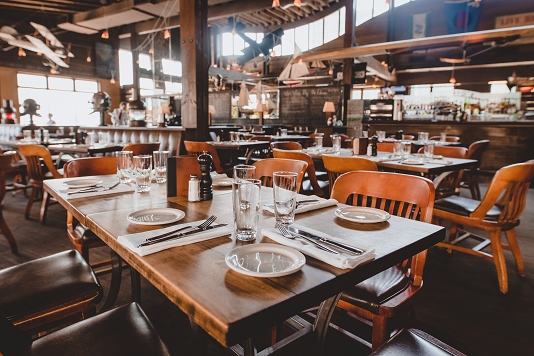

Cardero's Restaurant

Details
Address
1583 Coal Harbour Quay,
Vancouver, BC V6G 3E7
Vancouver, BC V6G 3E7
Phone
+1 (604)-669-7666
Website
https://www.vancouverdine.com/carderos/menus/
Hours
11am-11pm
order
takeout- Dine-in
Cardero's Restaurant is a popular seafood restaurant located in Vancouver, Canada. Here is some information you can use on your website: Concept: Cardero's Restaurant is a waterfront seafood restaurant that offers stunning views of the harbor and Stanley Park. The restaurant is known for its fresh seafood dishes, upscale atmosphere, and friendly service. Menu: The menu at Cardero's Restaurant features a variety of seafood dishes, including crab cakes, salmon, scallops, and lobster. The restaurant also has a selection of non-seafood dishes, including steak and pasta. The restaurant also has an extensive wine list and cocktail menu.